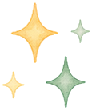
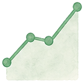
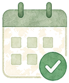
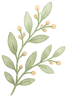

毎日3つの感謝を記録
今日の気分と感謝したことを3つ記録するだけ。1分で完了するシンプルな習慣です。
心理学で研究された感謝習慣で、メンタルヘルス向上・睡眠改善・心理的幸福感アップ。登録不要・完全無料・プライベート・オフラインOK。
🌟 今日の感謝を記録する今日感謝したことを3つ記録しましょう
科学的に裏付けられた感謝習慣を、続けやすく。記録・可視化・振り返りまでこれ1つで。
今日の気分と感謝したことを3つ記録するだけ。1分で完了するシンプルな習慣です。
書くことに迷ったら「ヒント」をタップ。感謝文の例を提案し、毎日の記録をサポートします。

就寝前の記録にやさしい配色。睡眠改善と相乗効果のある夜のルーティンに最適です。

1年間の感謝トレンドをグラフで可視化。気分の移り変わりをひと目で振り返れます。
連続記録日数とバッジを表示。「続けたくなる」仕掛けで習慣化を後押しします。
記録は端末内のみに保存。サーバー送信なし・登録不要・オフラインでも使えます。
ポジティブ心理学・感謝研究で報告されている効果（参考値）
※ R.エモンズ博士らの感謝研究・ポジティブ心理学の知見を参考にした目安値です。効果には個人差があります。
アカウント登録もインストールも不要。今すぐブラウザで始められます。
今日の気分を絵文字でタップ
感謝したことを1〜3つ入力
ワンタップで端末内に保存
履歴・統計・グラフで可視化
連続記録で習慣化を達成
忙しい毎日でも、心を整える小さな習慣を。
1日を穏やかに締めくくる
気持ちの切り替えを習慣に
今日の良かったことを共有
前向きな1日のスタートに
小さな習慣が、毎日の気持ちを少しずつ変えていく。利用者の体験談です。
「寝る前の5分で今日の感謝を3つ書くだけ。続けるうちに、嫌なことより良かったことに目が向くようになりました。睡眠も以前より深くなった気がします。」
「登録もインストールも不要で、ブラウザですぐ始められたのが続いた理由。データが端末内だけに残るので、本音を素直に書けるのが気に入っています。」
「子どもと一緒に『今日良かったこと』を言い合う習慣に。年間グラフで記録が積み上がっていくのが見えると、家族みんなのモチベーションになります。」
無料のまま、毎日の感謝習慣に必要なものをすべて。


💡 感謝習慣と組み合わせることで、より充実した日々を実現できます
Q: 感謝日記を書くと具体的にどんな効果がありますか？
A: カリフォルニア大学のロバート・エモンズ博士らの研究によると、感謝の気持ちを日記に書くことで幸福感が高まり、抑うつ症状が減少し、睡眠の質が向上することが示されています。毎日「感謝できたこと3つ」を書くだけで、脳がポジティブな出来事に注目する習慣が身につき、日常のストレスを客観的に捉えやすくなります。感謝日記は自己肯定感の向上にもつながり、困難な状況でも「良いこと」を見つける思考の柔軟性が育まれます。まずは2週間継続することで、気持ちの変化を感じ始める方が多いです。
Q: 感謝日記が続かない場合はどうすればいいですか？
A: 感謝日記が続かない主な原因は「毎日書かなければ」というプレッシャーです。まず「週3回以上できればOK」と緩やかに設定することで継続しやすくなります。書く内容に詰まる場合は「今日食べておいしかったもの・助けてくれた人・天気・身体の健康」など小さなことから始めるとよいでしょう。同じ時間（朝起きた直後・就寝前）に書く習慣をつけると、日課として定着しやすくなります。本ツールでは記録が蓄積されるため、過去の感謝リストを見返すことでモチベーションが維持しやすくなります。
Q: 感謝日記とポジティブ心理学の関係を教えてください
A: 感謝日記はポジティブ心理学（幸福の科学）を実践する代表的なツールの一つです。ポジティブ心理学の創始者マーティン・セリグマン博士は「感謝の手紙を書く・過去の良い出来事を振り返る」などのポジティブ介入が、うつ症状の改善や幸福感向上に統計的に有意な効果を持つことを示しました。神経科学的には、感謝を感じることで脳内のドーパミン・セロトニンが分泌されやすくなり、幸福感と動機付けが高まります。感謝日記は薬ではなく日常的な「心の筋トレ」として、継続することで効果が蓄積されていきます。
Q: 子どもと一緒に感謝日記を実践できますか？
A: はい、子どもでも感謝日記の実践は可能です。特に就寝前に親子で「今日の良かったこと3つ」を話し合う「感謝タイム」は、子どもの感情表現力・共感力・自己肯定感の発達に効果的とされています。文字を書けない年齢の子どもには、絵を描く・口頭で伝える形でも十分です。学校でいじめや友人関係で悩んでいる子どもにとっても、毎日「良かったこと」を意識することがストレス耐性の向上に役立つという研究報告があります。家族全員で感謝日記を始めることで、家庭の雰囲気がポジティブになるという効果も多くの家族が実感しています。
⚠️ 本ツールの結果は参考情報です。専門的判断は資格を持つ専門家にご相談ください。
「感謝日記・ポジティブ思考記録」は、毎日の感謝を記録してポジティブ思考を習慣化。心理学で研究された感謝習慣で、メンタルヘルス向上・睡眠改善・継続習慣化を実現。
毎日3つの感謝できたことを記録するシンプルな日記アプリです。継続することで幸福感・メンタルヘルスへのポジティブな効果が期待できます。過去の記録の振り返りもできます。
ストレスが多い時期のメンタルケアや、ポジティブ思考を習慣化したい方に最適です。就寝前の5分ルーティンとして取り入れることで、睡眠の質向上にも効果的とされています。
感謝日記の効果には個人差があります。深刻なメンタル不調については、医療機関や専門カウンセラーへの相談をおすすめします。
総務省「社会生活基本調査」などをもとに、日本人の趣味・余暇活動の実態を整理しました。
| 項目 | データ | 出典 |
|---|---|---|
| 平均余暇時間（有業者・1日） | 約3時間（平日）/ 約7時間（休日） | 総務省「社会生活基本調査」2021年 |
| 読書の平均時間（1日） | 約10〜20分（読書をする人の平均は約40分） | 総務省「社会生活基本調査」参考 |
| 趣味・娯楽費（月平均） | 約2〜4万円（世帯規模・収入で大きく差あり） | 総務省「家計調査」参考値 |
| 継続的な趣味活動と精神健康 | 定期的な趣味活動はストレス軽減・幸福感向上に効果 | 心理学研究・厚生労働省「こころの健康」参考 |
⚠️ 計算結果の活用にあたって
Q. 感謝日記とうつ病・不安障害への効果はありますか？
感謝日記をはじめとするポジティブ心理学的介入は、軽度〜中等度のうつ症状や不安感の改善に一定の効果があることが複数の研究で示されています。ただし感謝日記はあくまでも補完的な実践であり、うつ病・不安障害などの精神的健康上の問題には医師・カウンセラーなどの専門家への相談が不可欠です。感謝の記録はネガティブな思考の「反芻（はんすう）」を減らし、日常の良い側面に意識を向けることで、認知の偏りを修正する効果が期待されます。感謝日記を始める場合は主治医や支援者に相談した上で、治療の補助的なセルフケアとして取り入れることをおすすめします。
Q. 感謝できることが見つからない日はどうすればいいですか？
感謝できることが見つからないと感じる日は誰にでもあります。そういう日は「今日できたこと・なかったこと」の小さな事実に目を向けることが有効です。「今日も食事ができた」「雨の中でも家にいられた」「体が健康だった」など、当たり前に感じることを改めて感謝の対象として捉え直す練習が大切です。「感謝できることが何もない」と感じる日こそ、日常の豊かさを見落としているサインかもしれません。また感謝の対象は「他者への感謝」だけでなく「自分自身への感謝（今日も頑張った）」も含めていいでしょう。書けない日があっても責めずに、次の日から再開することが長続きの秘訣です。
Q. このツールはスマートフォンでも使えますか？
はい、スマートフォン・タブレット・PCのすべてのデバイスで快適にご利用いただけます。レスポンシブデザインを採用しており、画面サイズに合わせて自動的に最適なレイアウトで表示されます。入力した記録はブラウザのローカルストレージに保存されるため、同じブラウザで次回アクセスした際もデータが引き継がれます。スマートフォンのホーム画面に追加（ショートカット設定）することで、アプリのように毎日すぐにアクセスできるようになります。記録データはデバイス内にのみ保存され外部サーバーには送信されないため、プライバシーが守られた状態でご使用いただけます。
「感謝日記・ポジティブ思考記録」はAppADayCreatorが提供する無料Webツールです。ライフスタイルに関する情報を素早く手軽に確認できます。会員登録・アプリインストール不要で、ブラウザからすぐにご利用いただけます。すべての処理はブラウザ内で完結するため、入力した情報が外部サーバーに送信されることはなく、プライバシーも保護されます。AppADayCreatorでは、日常生活のあらゆるシーンで役立つWebツールを400本以上無料で提供しています。金融・健康・育児・キャリア・旅行など幅広いカテゴリのツールをご活用ください。
📖 お役立ちコラム